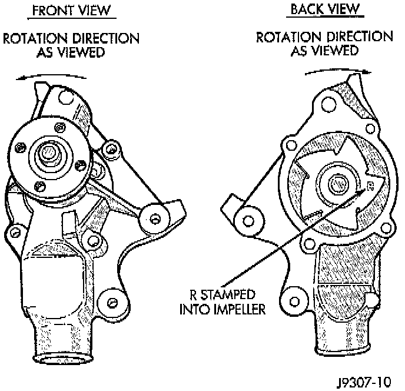
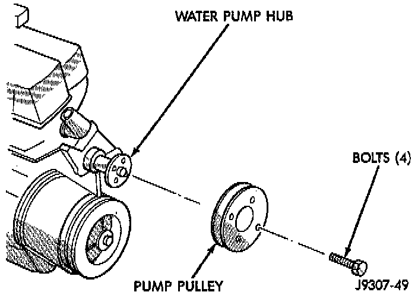
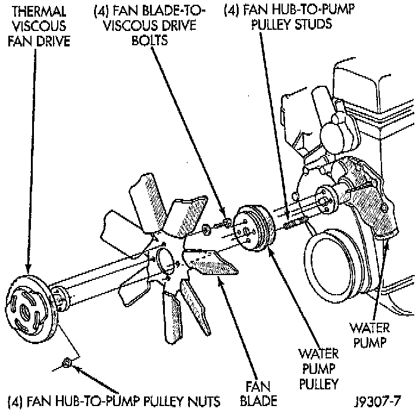
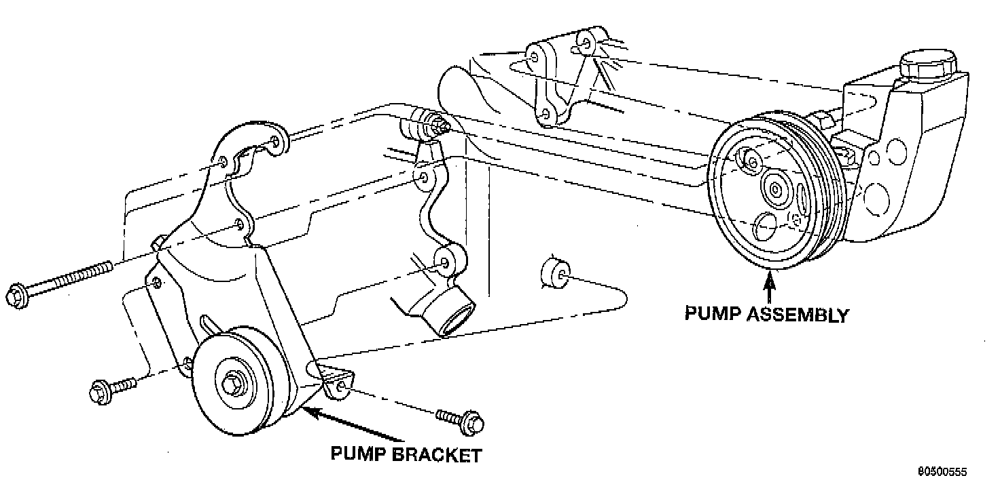
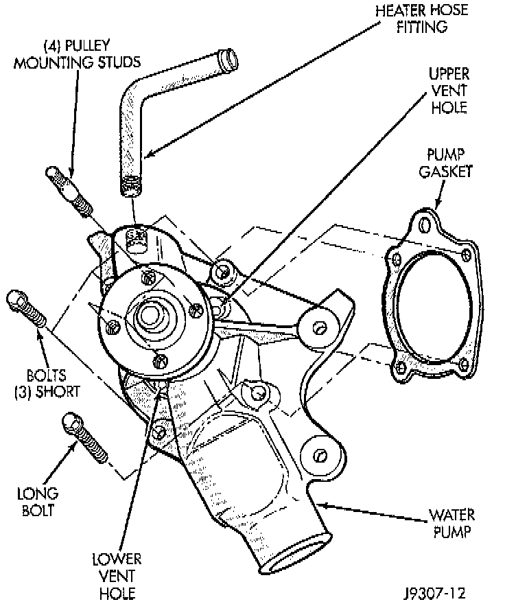

Removal
NOTES:^ If the water pump is replaced because of mechanical damage, the fan blades and viscous fan drive should also be inspected. These components could have been damaged due to excessive vibration.
^ The water pump can be removed without discharging the air conditioning system (if equipped).
^ The water pump impeller is pressed on the rear of the pump shaft and bearing assembly. The water pump is serviced only as a complete assembly.
^ DO NOT WASTE reusable coolant. If the solution is clean, drain coolant into a clean container for reuse.

CAUTION: This engine has a reverse (counter clockwise) rotating water pump. The letter R is stamped into the back of the water pump impeller to identify. Engines from previous model years, depending upon application, may be equipped with a forward (clockwise) rotating water pump. Installation of the wrong water pump will cause engine over heating.
WARNING: DO NOT REMOVE THE BLOCK DRAIN PLUG(S) OR LOOSEN RADIATOR DRAINCOCK WITH THE SYSTEM HOT AND UNDER PRESSURE. SERIOUS BURNS FROM COOLANT CAN OCCUR.
1. Disconnect negative battery cable at battery.
2. Drain the cooling system.
3. Vehicles equipped with A/C or heavy duty cooling system:

4. Loosen (but do not remove at this time) the four water pump pulley-to-water pump hub mounting bolts.
5. Vehicles without A/C or heavy duty cooling system:

6. Loosen (but do not remove at this time) the four fan hub-to-water pump pulley mounting nuts.
NOTE: The engine accessory drive belt must be removed prior to removing the fan (if installed at pump) or fan pulley.
7. Remove engine drive belt.

8. Remove power steering pump.

WARNING: CONSTANT TENSION HOSE CLAMPS ARE USED ON MOST COOLING SYSTEM HOSES. WHEN REMOVING OR INSTALLING, USE ONLY TOOLS DESIGNED FOR SERVICING THIS TYPE OF CLAMP, SUCH AS SPECIAL CLAMP TOOL (NUMBER 6094) SNAP-ON CLAMP TOOL (NUMBER HPC-20) MAY BE USED FOR LARGER CLAMPS. ALWAYS WEAR SAFETY GLASSES WHEN SERVICING CONSTANT TENSION CLAMPS.

CAUTION: A number or letter is stamped into the tongue of constant tension clamps. If replacement is necessary, use only an original equipment clamp with matching number or letter.
9. Remove lower radiator hose from water pump. Remove heater hose from water pump fitting.
10. Remove four nuts or bolts previously loosened and remove the fan blade assembly and pulley (if fan is installed at pump), or remove the pulley from the vehicle.
11. After removing fan blade/viscous fan drive assembly, do not place thermal viscous fan drive in horizontal position. If stored horizontally, silicone fluid in viscous fan drive could drain into its bearing assembly and contaminate lubricant.

12. Remove the four pump mounting bolts and remove pump from vehicle. Discard old gasket. Note that one of the four bolts is longer than the other bolts.
13. If pump is to be replaced, the heater hose fitting must be removed. Note position of fitting before removal.